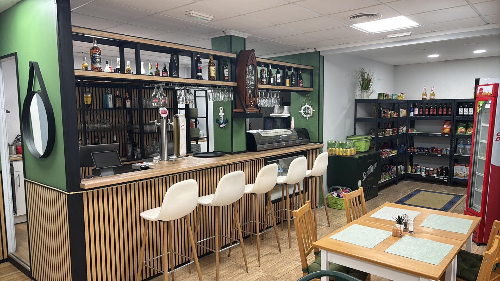
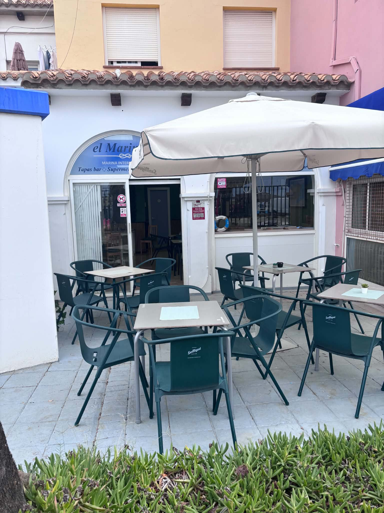
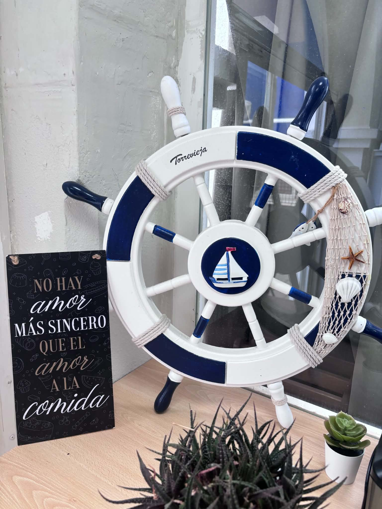
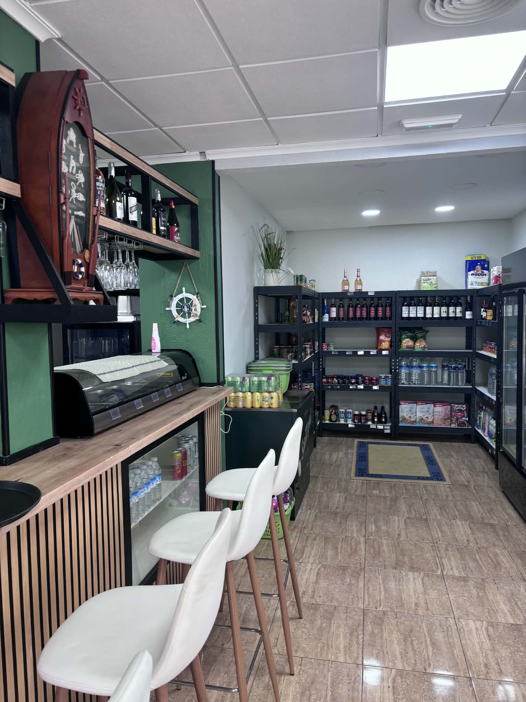

TAPAS · BAR · SUPERMERCADO
La vida sabe
mejor junto
al mar.
Simple breakfasts, home-cooked food, a bar and a shop. Great prices on everything, by Marina Internacional, Torrevieja.



A LITTLE PLACE WITH A NAUTICAL SOULHELLO, WE ARE EL MARINERO
Del puerto.
De aquí.
Para todos.
Some places make you want to stay a little longer. El Marinero is one of them: a meeting place by the harbour, among boats, conversations and the easy rhythm of Torrevieja.
Start with a simple breakfast, enjoy home-cooked food or have a drink at the bar. Pick up your everyday essentials in our shop, all at great prices. Whether you live here or are just passing through, make yourself at home.
Take a look aroundTAKE A LITTLE MEDITERRANEAN WITH YOU
Tu próximo plan.
También para llevar.
A day on the boat or a walk along the coast? Stop by El Marinero and ask about our takeaway options.
In the future, we plan to bring your order straight to your boat. Boat delivery is not available yet; we will share updates here.
MORE THAN A TAPAS BAR
Lo que necesitas,
a mano.
Our little shop is part of harbour life. Drinks, snacks and everyday essentials at great prices for neighbours, travellers and those at home on the sea.

A GLIMPSE OF EL MARINERO
Pequeños momentos.
Bonitas vistas.
NOS VEMOS EN TORREVIEJA
El mar está cerca.
Nosotros también.
Find us by Marina Internacional. Take a break, choose your table and let the harbour provide the view.
Marina Internacional, Calle Puerto Deportivo
Local 7, 03181 Torrevieja, Alicante · España
Monday–Sunday
10:00–18:00
Holiday hours may vary. Please call to confirm.
¿Ya has compartido
un momento con nosotros?
We would love to hear about your visit.
Find us on Google Maps